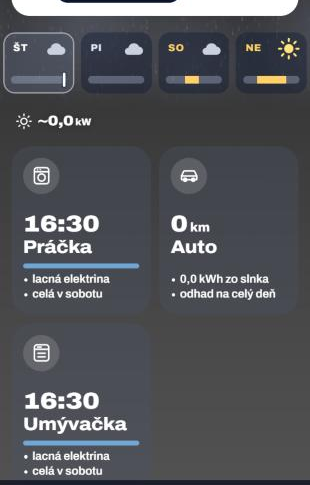
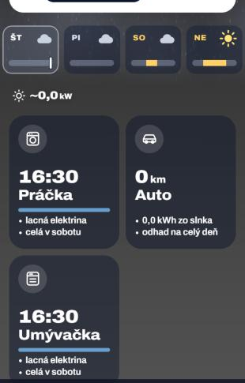
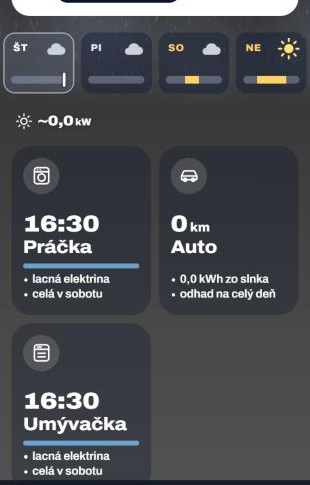
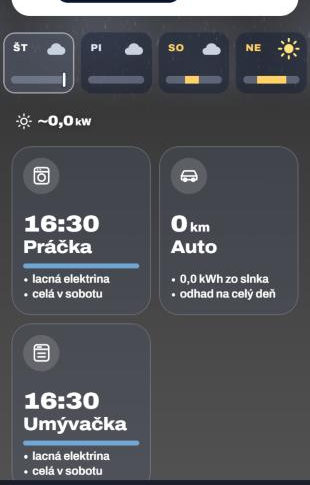
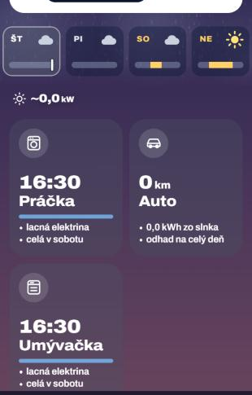
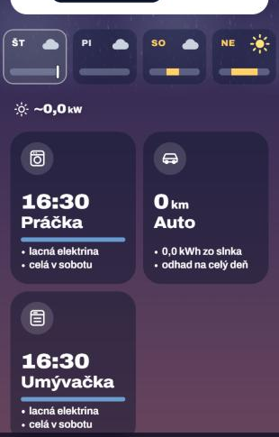

<title>Sklo dlaždíc na sivej oblohe</title>
<meta name="claude:viewport-fit-sides" content="cover" />
<style>
    /* Rozloženie: úvod s príčinou, potom mriežka variantov (snímka + tabuľka kontrastu), na konci odporúčanie. */
    :root {
        --bg: #2b2d33;
        --panel: #363940;
        --fg: #f3f4f7;
        --dim: #c3c7d0;
        --line: #50545e;
        --good: #b9f28c;
        --bad: #ffc4ba;
        --mid: #ffd166;
        --font: 'Archivo', -apple-system, 'Segoe UI', Arial, sans-serif;
        color-scheme: dark;
    }
    body {
        background: var(--bg);
        color: var(--fg);
        font-family: var(--font);
        font-size: 15px;
        line-height: 1.5;
    }
    main {
        max-width: 1080px;
        margin: 0 auto;
        padding-block: 28px 48px;
        padding-left: max(16px, env(safe-area-inset-left, 0px));
        padding-right: max(16px, env(safe-area-inset-right, 0px));
        display: grid;
        gap: 28px;
    }
    h1 {
        font-size: 1.6rem;
        margin: 0;
        text-wrap: balance;
    }
    h2 {
        font-size: 1.15rem;
        margin: 0;
        text-wrap: balance;
    }
    p {
        margin: 0;
        max-width: 68ch;
        color: var(--dim);
    }
    p b,
    li b {
        color: var(--fg);
    }
    .intro {
        display: grid;
        gap: 10px;
    }
    .vary {
        display: grid;
        grid-template-columns: repeat(auto-fit, minmax(240px, 1fr));
        gap: 16px;
    }
    .v {
        background: var(--panel);
        border-radius: 16px;
        padding: 14px;
        display: grid;
        gap: 10px;
        align-content: start;
        min-width: 0;
    }
    .v img {
        width: 100%;
        border-radius: 10px;
        display: block;
    }
    .v .k {
        font-size: 0.75rem;
        letter-spacing: 0.08em;
        text-transform: uppercase;
        color: var(--dim);
    }
    .v ul {
        margin: 0;
        padding-left: 18px;
        color: var(--dim);
        display: grid;
        gap: 4px;
    }
    .odp {
        outline: 2px solid var(--good);
    }
    .dvaja {
        display: grid;
        grid-template-columns: repeat(auto-fit, minmax(240px, 320px));
        gap: 16px;
    }
    .tab {
        overflow-x: auto;
    }
    table {
        border-collapse: collapse;
        font-variant-numeric: tabular-nums;
        min-width: 560px;
    }
    th,
    td {
        padding: 6px 12px;
        border-bottom: 1px solid var(--line);
        text-align: right;
    }
    th:first-child,
    td:first-child {
        text-align: left;
    }
    th {
        font-weight: 600;
        color: var(--dim);
        font-size: 0.85rem;
    }
    .z {
        color: var(--bad);
    }
    .s {
        color: var(--mid);
    }
    .d {
        color: var(--good);
    }
</style>

<main>
    <section class="intro">
        <h1>Dlaždice na karte Teraz splývajú so sivou oblohou</h1>
        <p>
            Snímky sú z appky spustenej lokálne 26. 11. 2026 o 16:26, Dvorany nad Nitrou, dážď, slnko už pod obzorom. Obloha za dlaždicami
            je sivá s jasom okolo <b>rgb(80, 80, 80)</b>.
        </p>
        <p>
            <b>Príčina:</b> po západe slnka má karta príznak noci a dlaždice dostanú svetlé sklo (rozhodnutie 2B,
            <code>#tz-co[data-noc] .dl</code>). To bolo navrhnuté na tmavú nočnú oblohu. Za súmraku je však obloha ešte stredne svetlá a pri
            zamračení sivá, a svetlé sklo na nej vyjde takmer presne v jej farbe: pomer jasu dlaždica : obloha je <b>1,00</b>. Rovnako to
            dopadne aj za <b>jasného</b> súmraku (1,02). Cez deň je pomer 1,7, tam problém nie je.
        </p>
        <p>Biely text na dlaždici čitateľný je vo všetkých variantoch (WCAG nad 4,5 : 1), ide len o to, aby bolo vidno tvar dlaždice.</p>
        <p>
            <b>Rozhodnuté 26. 11. 2026: možnosť 1.</b> V kóde sa meria od 40 % výšky obrazovky nadol (vyššie je hlavička so scénou) a tmavé
            sklo má krytie najviac 65 %. O 16:26 pri zamračení tak vyjde tmavé sklo 55 %, trochu tmavšie ako na snímke možnosti 1, lebo
            pokrýva aj tmavší horný okraj dlaždíc.
        </p>
    </section>

    <section class="vary">
        <article class="v">
            <span class="k">Teraz</span>
            <h2>Svetlé sklo po západe slnka</h2>
            
            <ul>
                <li>Okraj dlaždice takmer nevidno.</li>
            </ul>
        </article>

        <article class="v odp">
            <span class="k">Možnosť 1 · odporúčam</span>
            <h2>Sklo podľa oblohy</h2>
            
            <ul>
                <li>
                    Render z farby oblohy vo výške dlaždíc spočíta sklo tak, aby sa dlaždica od oblohy líšila aspoň 1,5 : 1, podobne ako
                    stmavený spodok <code>--s3</code>. Prednosť má tmavé sklo, svetlé len keď tmavé nestačí (jasná noc).
                </li>
                <li><b>+</b> funguje pri každej oblohe aj pri budúcich zmenách farieb; test prejde všetky oblohy.</li>
                <li><b>−</b> nový výpočet v <code>shared/sky.js</code>, premenná v CSS, nahradí pravidlo 2B.</li>
            </ul>
        </article>

        <article class="v">
            <span class="k">Možnosť 2 · najjednoduchšia</span>
            <h2>Svetlé sklo len pri tmavej oblohe</h2>
            
            <ul>
                <li>Ostanú dve pevné sklá, len o svetlom nerozhoduje noc, ale jas oblohy.</li>
                <li><b>+</b> pár riadkov, vzhľad cez deň sa nemení.</li>
                <li><b>−</b> na strednej sivej sú obe sklá slabé: teraz 1,35, o 17:00 len 1,20.</li>
            </ul>
        </article>

        <article class="v">
            <span class="k">Možnosť 3</span>
            <h2>Tmavšie sklo vždy, svetlé len v tme</h2>
            
            <ul>
                <li>Tmavé sklo 45 % namiesto 30 %, svetlé len pri tmavej oblohe. Pri tejto oblohe vyzerá ako možnosť 1.</li>
                <li><b>+</b> jednoduché, silný rozdiel za súmraku.</li>
                <li><b>−</b> cez deň sú dlaždice citeľne ťažšie a tmavšie; jasná noc ostáva slabá (1,26), o 17:00 pri zamračení 1,31.</li>
            </ul>
        </article>

        <article class="v">
            <span class="k">Možnosť 4 · nekonvenčná</span>
            <h2>Jemný svetlý lem</h2>
            
            <ul>
                <li>Sklo ostane, každá dlaždica dostane tenký lem 1 px, biely 22 %.</li>
                <li><b>+</b> tvar vidno pri akejkoľvek oblohe.</li>
                <li>
                    <b>−</b> ide proti rozhodnutiu „ploché, bez lemu“ (21. 11.) a biely obrys je dnes znak zapnutého spotrebiča, ten by sa
                    stratil.
                </li>
            </ul>
        </article>
    </section>

    <section class="intro">
        <h2>Aj jasný súmrak má ten istý problém</h2>
        <p>Obloha o 16:26 bez oblakov (simulovaná farbami oblohy v appke): vľavo dnes, vpravo možnosť 1.</p>
        <div class="dvaja">
            
            
        </div>
    </section>

    <section class="intro">
        <h2>Pomer jasu dlaždica : obloha</h2>
        <p>Vypočítané z farieb oblohy appky v spodnej časti obrazovky (bez vrstiev počasia). Pod 1,3 tvar takmer splynie.</p>
        <div class="tab">
            <table>
                <thead>
                    <tr>
                        <th>Obloha</th>
                        <th>Teraz</th>
                        <th>1 podľa oblohy</th>
                        <th>2 prah jasu</th>
                        <th>3 tmavšie</th>
                    </tr>
                </thead>
                <tbody>
                    <tr>
                        <td>zamračený súmrak 16:26 (dnes)</td>
                        <td class="z">1,00</td>
                        <td class="d">1,50</td>
                        <td class="s">1,35</td>
                        <td class="d">1,56</td>
                    </tr>
                    <tr>
                        <td>zamračené 17:00</td>
                        <td class="z">1,14</td>
                        <td class="d">1,53</td>
                        <td class="z">1,20</td>
                        <td class="s">1,31</td>
                    </tr>
                    <tr>
                        <td>jasný súmrak</td>
                        <td class="z">1,02</td>
                        <td class="d">1,50</td>
                        <td class="s">1,37</td>
                        <td class="d">1,60</td>
                    </tr>
                    <tr>
                        <td>jasná noc</td>
                        <td class="z">1,26</td>
                        <td class="d">1,55</td>
                        <td class="z">1,26</td>
                        <td class="z">1,26</td>
                    </tr>
                    <tr>
                        <td>zamračené poludnie</td>
                        <td class="d">1,73</td>
                        <td class="d">1,73</td>
                        <td class="d">1,73</td>
                        <td class="d">2,34</td>
                    </tr>
                    <tr>
                        <td>jasný deň</td>
                        <td class="d">1,75</td>
                        <td class="d">1,75</td>
                        <td class="d">1,75</td>
                        <td class="d">2,39</td>
                    </tr>
                    <tr>
                        <td>bez dát (sivá)</td>
                        <td class="d">1,65</td>
                        <td class="d">1,65</td>
                        <td class="d">1,65</td>
                        <td class="d">2,16</td>
                    </tr>
                </tbody>
            </table>
        </div>
    </section>
</main>
